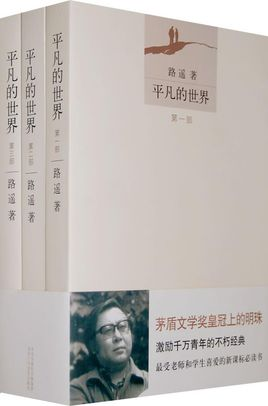
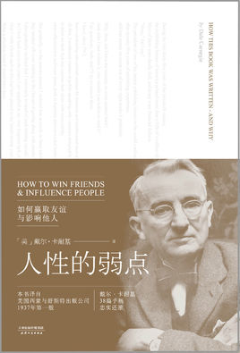
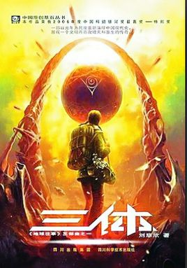

书名:《平凡的世界》

内容简介
《平凡的世界》是中国作家路遥创作的一部百万字的小说。这是一部全景式
地表现中国当代城乡社会生活的长篇小说，全书共三部。该书以中国70年代中
期到80年代中期十年间为背景，通过复杂的矛盾纠葛，以孙少安和孙少平两兄
弟为中心，刻画了当时社会各阶层众多普通人的形象；劳动与爱情、挫折与追
求痛苦与欢乐、日常生活与巨大社会冲突纷繁地交织在一起，深刻地展示了普
通人在大时代历史进程中所走过的艰难曲折的道路。
1991年3月《平凡的世界》获中国第三届茅盾文学奖。第一版于1986年12月
在文联出版社出版；第二版于2012年3月在北京十月文艺于出版社正式发行。
书名:《人性的弱点》

内容简介
该书汇集了卡耐基的思想精华和最激动人心的内容，是作者最成功的励志经
典，出版后立即获得了广大读者的欢迎，成为西方世界最持久的人文畅销书。
无数读者通过阅读和实践书中介绍的各种方法，不仅走出困境，有的还成为世
人仰慕的杰出人士。只要不断研读本书，相信你也可以发掘自己的无穷潜力，
创造辉煌的人生。
世界成功学第一书，戴尔·卡内基成功学教育全书一！世界上最畅销、最经
典、最实用的为人处世参考书。“成人教育之父”戴尔·卡耐基的思想精华和
最激动人心的内容，帮助你解决你所面临的最大问题：如何在你的日常生活、
商务活动与社会交往中与人打交道，并有效地影响他人；如何击败人类的生存
之敌——忧虑，以创造一种幸福美好的人生。
书名:《三体》

内容简介
《三体》三部曲，又名“地球往事”三部曲，作者刘慈欣。该系列小说由
《三体》、《黑暗森林》、《死神永生》三部小说组成，于2006年至2010年
由《科幻世界》杂志连载，出版。
《三体》三部曲讲述了地球文明在宇宙中的兴衰历程。作品对人类历史、
物理学、天文学、社会学及哲学等均有涉及，从科幻的角度对人性进行了深
入探讨，全书格局宏大，立意高远，被誉为迄今为止中国当代最杰出的科幻
小说，是中国科幻文学的里程碑之作，将中国科幻推上了世界的高度。
2014年底小说第一部的英文版在美国上市，反响热烈， 并于2015年获得
美国科幻奇幻协会“星云奖”等五个奖项提名。 2015年8月23日，《三体》
获第73届世界科幻大会颁发的雨果奖最佳长篇小说奖 ，这是亚洲科幻小说
首次获得雨果奖。 10月，作者刘慈欣因该作获得全球华语科幻文学最高成
就奖。
书名:《唐骏自传》
内容简介
从普通程序员到微软中国总裁，从盛大总裁到新华都总裁兼CEO，再到港澳
资讯董事长，首次实现中国商界的MBO，他屡次重新出发，在通往终极职业经
理人的道路上，他是如何创造和把握机会的?他的成功之道是什么?
本书是中国第一职业经理人唐骏的首部人生职场自传，讲述了唐骏的20年职
场沉浮和50年人生感悟。
在书中，唐骏全面揭秘了"学历门"的幕后真相，系统讲述了"学历门"事件的
起因、经过和结尾，并做了深刻的自我反思和总结，还原一个真实的唐骏。
本书还爆料了有关微软、盛大、新华都、新浪、云南白药等公司的一些商业
"内幕"，有关唐骏和比尔盖茨、鲍尔默、柳传志、任正非、陈天桥、陈发树等
商界名流交往的趣闻轶事……
唐骏还在书中分享了大量实用的知识，包括职业经理人生存法则，职场潜规
则，唐骏式谈判艺术，唐骏式演讲技巧，唐骏式政府公关课等等。